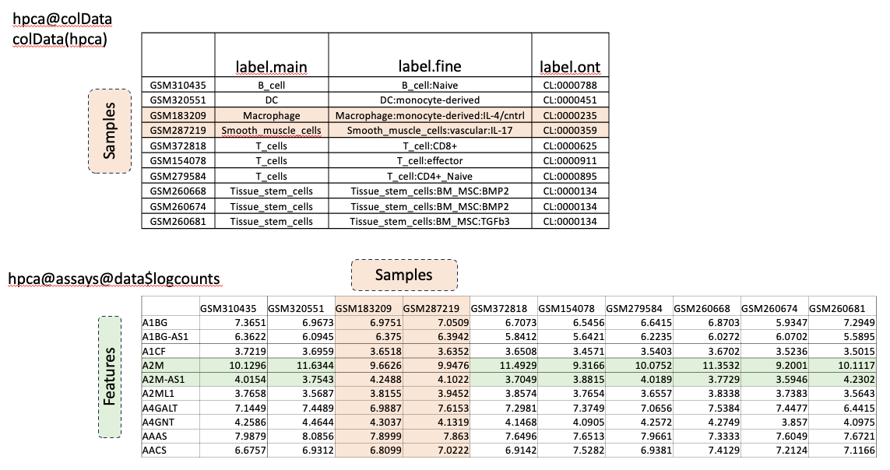
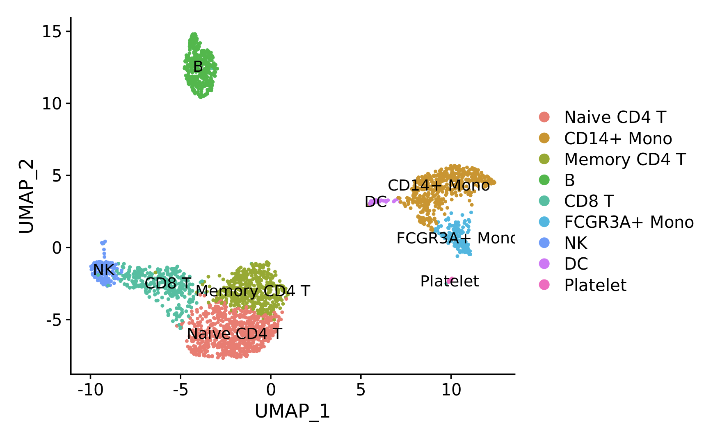
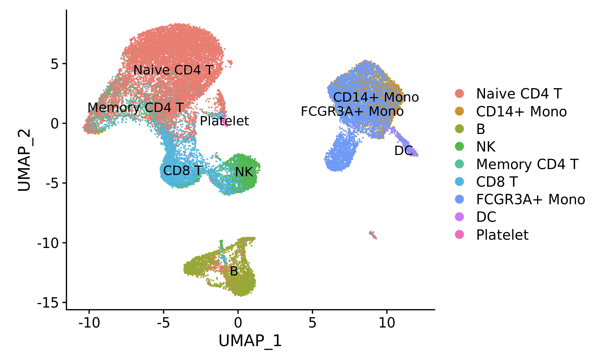
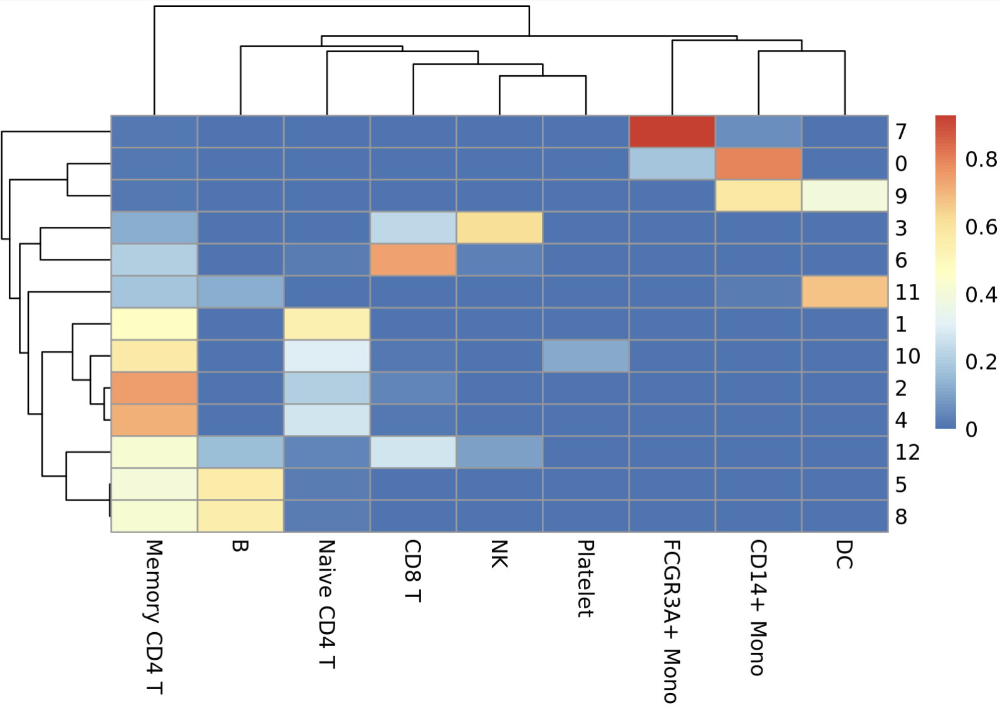

Cell-type Identification
In this section, we'll demonstrate two automated methods to label cells in our dataset using reference datasets with known cell labels. More information on these methods is presented in Lecture Part II.
- SingleR method, which uses correlation of gene expression. This method can use both single-cell and bulk RNAseq reference datasets.
- Seurat Integration Mapping which applies integration between a labeled, reference single-cell RNAseq dataset and our query dataset
To start, we set our library path on the HPC cluster:
LIB='/cluster/tufts/hpc/tools/R/4.0.0/'
.libPaths(c("",LIB))
We require three new packages: - Singler - celldex: A collection of reference expression datasets with cell type labels - pheatmap A package to make "pretty" heatmaps.
suppressPackageStartupMessages({
library(Seurat)
library(tidyverse)
library(cowplot)
library(SingleR)
library(celldex)
library(pheatmap)
})
Set the base dir:
baseDir <- "~/intro_to_scrnaseq/"
We begin by loading a pre-processed version of our integrated, clustered samples from the data folder.
integ_seurat = readRDS(file.path(baseDir, "data/clustered_seurat.rds"))
When we left off, we had integrated our unstimulated (ctrl) and interferon beta stimulated (stim) PBMC samples and clustered the resulting dataset at resolution 0.4. We can visualize the cells both using either cluster or sample labels:
Idents(object = integ_seurat) <- "integrated_snn_res.0.4"
p1 <- DimPlot(integ_seurat, label=T)
Idents(object = integ_seurat) <- "sample"
p2 <- DimPlot(integ_seurat)
plot_grid(p1, p2)
SingleR Correlation Method
First, we'll use SingleR along with a reference database of expression profiles of known cell types in order to identify our cells and clusters. As mentioned in the lecture, this method measures the correlation of overall gene expression between cells in a reference database with cells in the query dataset in order to label cells.
To start, we'll use a database of bulk RNAseq profiles of Human pure cell-types called the Human Primary Cell Type Atlas. This dataset along with several others is available through the celldex R library. A database like this is useful as a starting point to determine which broad cell types your sample has, either because there is no existing single-cell reference for your sample-type, or because you want to make sure that your sample-type contains the expected cell types before using a more specific single-cell reference.
To load, type the following, and type yes when prompted to create the ExperimentHub directory in a hidden .cache directory in your home folder.
hpca = HumanPrimaryCellAtlasData()
Summarized Experiment which allows one to store numeric data matrices in assays along with a data.frame providing annotation columns for sample in the data.

We can access the sample annotations in the @colData slot, which show the sample cell-types. We can access the log-transformed expression data in the @assay slot.
head(hpca@colData)
head(hpca@assays@data$logcounts)
Well use the coarse-grained cell-type labels, label.main, column of the metadata, which has the following cell-types:
unique(hpca$label.main)
The data to be labeled is input into SingleR as a log-transformed, normalized count matrix, which we can extract from the RNA assay our integ_seurat object:
query_counts = integ_seurat@assays$RNA@data
SingleR can be run both on the cluster level and the individual cell level. For cluster-level annotation, the average expression profile of each cluster is used and a single label is generated. This is much faster to run, since we have many fewer clusters than cells, so we'll start here.
query_clusters = integ_seurat@meta.data$integrated_snn_res.0.4
The following command runs SingleR on the cluster level, without pruning, which should take only a few seconds.
pred_cluster <- SingleR(test = query_counts,
clusters = query_clusters,
ref = hpca,
labels = hpca$label.main,
prune=F)
Save the results:
saveRDS(pred_cluster, file.path(baseDir, "results/singler_hpca_cluster_res0.4.rds"))
We can view the results, which contain a score for every cell type plus the final label:
view(pred_cluster)
Select the columns that start with score to plot as a heatmap and the label column to annotate the heatmap:
scores = data.frame(pred_cluster) %>%
dplyr::select(starts_with("scores"))
labels = data.frame(pred_cluster) %>%
dplyr::select("labels")
The scores and chosen labels can be plotted using pheatmap:
pheatmap(scores,
annotation_row = labels)
Four cell-types were found in our data: B_cell, Monocyte, NK_cell and T_cell. However, some clusters like 10, 11, 12, do not appear to have a good match for any reference cell type.
Let's add the labels make a named list with new names:
new_names = pred_cluster$labels
names(new_names) = rownames(pred_cluster)
new_names
Set the identities to the clusters found at resolution 0.4, rename the identities, and add the names to the Seurat metadata:
Idents(object = integ_seurat) <- "integrated_snn_res.0.4"
integ_seurat = RenameIdents(integ_seurat,
new_names)
integ_seurat$singler_cluster_labels = Idents(integ_seurat)
Plot the labeled clusters:
Idents(integ_seurat) = "singler_cluster_labels"
DimPlot(integ_seurat,
label=T)
Running SingleR on the cell level uses the same method but eliminates the clusters argument from the command and enables the default pruning process. It will take ~20 minutes to run, so we'll run it as a batch job and not interactively (do not run the below code in Rstudio).
# DON'T RUN!
pred_cell <- SingleR(test = query_counts,
ref = hpca,
assay.type.test="logcounts",
labels = hpca$label.main)
06_singler_cell.R. This file contains the key steps above but runs SingleR on the cell level.
To run it, we use an SBATCH file that is interpreted by the cluster job scheduler called slurm. Open the file 06_run_singler_cell.sh in the scripts directory.
The file contains a header which specifies the resources that the job will need so that an appropriate compute node can be allocated. Header lines start with #SBATCH. The body of the script specifies the code to be run once the job is started on a compute node.
#!/bin/bash # Use the bash shell interpreter
#SBATCH -J run_singler # Give the job a name
#SBATCH --time=2:00:00 # Request 2 hours
#SBATCH -n 1 # Request 1 core
#SBATCH -N 1 # Request 1 node
#SBATCH --mem=10Gb # Request 10 Gb
#SBATCH --output=%j.out # Write the job output to a file prefixed by the job number
#SBATCH --error=%j.err # Write the job error to a file prefixed by the job number
module purge # Remove loaded modules
module load R/4.0.0 # Load R module
Rscript --no-save 06_singler_cell.R # Run the script
To run the script:
- Click on Terminal next to Console in the bottom portion of the Rstudio application
- Change to our scripts directory by typing cd ~/intro_to_scrnaseq/scripts
- Type sbatch 06_run_singler_cell.sh and press enter.
- Your job will be given a number by slurm and placed in the queue.
- To check the status of your job, type squeue -u tufts-username and you will see your job status.
Is your job submitted successfully?
- Yes (put up a green check mark in zoom)
- No (raise hand in zoom)
In the meantime, let's load the pre-processed cell-level labels.
pred_cell = readRDS(file.path(baseDir,"data/singler_hpca_cell.rds"))
head(pred_cell)
The cell-level labels have one row for every cell. The table contains scores for each reference label as well as both a labels and a pruned.labels column. We can directly add the pruned.labels to the Seurat object metadata using the AddMetaData function.
integ_seurat = AddMetaData(integ_seurat,
pred_cell$pruned.labels,
col.name = "singler_cell_labels")
Assign the idents and make a plot:
Idents(integ_seurat) = "singler_cell_labels"
DimPlot(integ_seurat,
label=T)
Some clusters contain a mix of cell labels. We can view the breakdown of cell-type labels per cluster using pheatmap:
tab <- table(cluster=integ_seurat$integrated_snn_res.0.4,
label=pred_cell$labels)
# divide by the total number of cells in each cluster
tab <- tab/rowSums(tab)
pheatmap(tab)
Are the dominant cell-level labels the same as the cluster-level labels?
- Add a row annotation of the cluster-level labels in order to compare visually
Some clusters appear to have a mix of cells, which may indicate that they contain a type of cell not in our reference database. This is expected since we've used a very general database. Next we'll use a single-cell RNAseq dataset that we expect will have a better match to our data.
Seurat Integration Mapping
The next reference dataset is a PBMC dataset available from 10X Genomics which has been pre-processed through the Seurat pipeline. Load the data:
pbmc = readRDS(file.path(baseDir, "data/pbmc_reference.rds"))
The cell-type label is in the seurat_annotation metadata column. Set the cell identities to this column and plot:
Idents(pbmc) = "seurat_annotations"
DimPlot(pbmc, label=T)

We see there are more specific T-cell and Monocyte cell subset labels.
The first step is to find the transfer anchors using the function FindTransferAnchors with the following code. This step similar to the FindIntegrationAnchors function in the integration step, except the PCA is performed only on the reference dataset and the query dataset is projected onto the reference learned PCA structure (reduction = "pcaproject" and project.query = FALSE by default). This allows us to potentially use a reference dataset with many more cell types than our query dataset.
anchors <- FindTransferAnchors(reference = pbmc,
query = integ_seurat)
Next, we'll transfer the reference cell-type labels to the query using TransferData. This step uses the proximity of each query cells to each anchors in order to label query cells.
predictions<- TransferData(anchorset = anchors,
refdata = pbmc$seurat_annotations)
Add the predicted id to the metadata:
integ_seurat <- AddMetaData(integ_seurat,
metadata = predictions$predicted.id,
col.name = "seurat_labels")
Set the identities to our newly added column and plot:
Idents(integ_seurat) = "seurat_labels"
DimPlot(integ_seurat,
label=T )

We can view the breakdown per cluster as a heatmap:
tab <- table(cluster=integ_seurat$integrated_snn_res.0.4,
label=integ_seurat$seurat_labels)
# divide by the total number of cells in each cluster
tab <- tab/rowSums(tab)
pheatmap(tab)

Cluster 11 cells are labeled predominantly Dendritic Cells.
Finally, we save the labeled object:
saveRDS(integ_seurat, file.path(baseDir,"results/labeled_seurat.rds"))
In the next section we'll look at a type of Differentially Expressed Gene known as a Marker Gene, which can help to confirm cell-type labels by confirming expression of known cell-type specific genes.